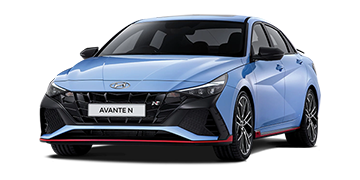
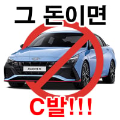

46 · 9 · 14 시간 전 · 원문

회전반경이 그랜져보다 큼ㅋㅋ
수집 당시 댓글 9개
국세청장 · 13 시간 전
↳ 답글 · 칠리치즈프라이 · 13 시간 전

옥수수수수염염차 · 12 시간 전
5n 탐. 주차할때마다 개 씨1벌 욕나옴.... 근데 출발하는 순간 웃음나옴 ㅎ
↳ 답글 · 노엘갤러거스하이플라잉버즈 · 12 시간 전
준중형suv 휠베이스가 3m...ㄷㄷ
↳ 답글 · 화성쨉쨉이 · 1 시간 전
저도5n타는데 폭이 거진 카니발만해서 주차 불편해요ㅋㅋ
kyosyou · 12 시간 전
겨울에 쏘카로 찍먹해봤는데 썸머 껴있어서 왕복 6차로 유턴못돌았음
뚝뚝뚝 하면서 직진하더라 ㅋㅋ
폭풍간지디즈니 · 12 시간 전
오히려 n은 납득가능
휠베만 늘리고 락투락 손 안봐서
ㅂㅅ같아진 애들이 문제지
갸뷰 · 10 시간 전
엥? 아반떼 n이 ?? 첨알았네
그린라이트 · 1 시간 전
댓글
수집 당시 댓글 9개
국세청장 · 13 시간 전
· 칠리치즈프라이 · 13 시간 전

옥수수수수염염차 · 12 시간 전
5n 탐. 주차할때마다 개 씨1벌 욕나옴.... 근데 출발하는 순간 웃음나옴 ㅎ
· 노엘갤러거스하이플라잉버즈 · 12 시간 전
준중형suv 휠베이스가 3m...ㄷㄷ
· 화성쨉쨉이 · 1 시간 전
저도5n타는데 폭이 거진 카니발만해서 주차 불편해요ㅋㅋ
kyosyou · 12 시간 전
겨울에 쏘카로 찍먹해봤는데 썸머 껴있어서 왕복 6차로 유턴못돌았음
뚝뚝뚝 하면서 직진하더라 ㅋㅋ
폭풍간지디즈니 · 12 시간 전
오히려 n은 납득가능
휠베만 늘리고 락투락 손 안봐서
ㅂㅅ같아진 애들이 문제지
갸뷰 · 10 시간 전
엥? 아반떼 n이 ?? 첨알았네
그린라이트 · 1 시간 전